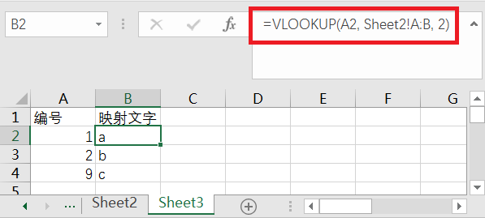
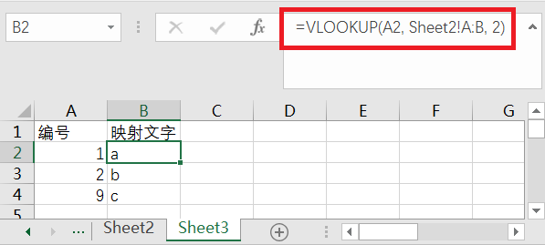

Excel
//
悬挂缩进

先打开word新建一个文档，选择标号如下图红框处所示:

输入文字如下图所示:

然后全选复制
回到excel文件中右键单击一个单元格弹出菜单，选择"选择性粘贴"

选择“Microsoft Word 文档 对象”然后按确定即可
VLOOKUP
=VLOOKUP(搜索的格子, 原数据表的列, 第几列, 找不到时的提示文字)

注意这里有一个在操作时的问题, 按上图举例说明:
1.在sheet3的某个格子中输入 "=vlookup(A2"。
2.然后输入后面的"原数据表的列"时需要选择sheet2中的 A, B 两列。
下面的步骤是重点, 并且可以有两种办法:
3.
a1.此时注意要用鼠标右键点击sheet3来回到sheet3, 若是用习惯性的鼠标左键则会导致"原数据表的列"原本应为sheet2的A, B两列变为sheet3的A, B两列。
a2.之后再输入", 2"即逗号和2, 即第2列。
或
b1.这是另一种办法即在上图中红框区域输入英文的逗号(,), 之后再输入上图红框区域中的 2, 即第2列。
b2.点击sheet3回到sheet3
4.输入右括号")"在按回车键。

注意这里有一个在操作时的问题, 按上图举例说明:
1.在sheet3的某个格子中输入 "=vlookup(A2"。
2.然后输入后面的"原数据表的列"时需要选择sheet2中的 A, B 两列。
下面的步骤是重点, 并且可以有两种办法:
3.
a1.此时注意要用鼠标右键点击sheet3来回到sheet3, 若是用习惯性的鼠标左键则会导致"原数据表的列"原本应为sheet2的A, B两列变为sheet3的A, B两列。
a2.之后再输入", 2"即逗号和2, 即第2列。
或
b1.这是另一种办法即在上图中红框区域输入英文的逗号(,), 之后再输入上图红框区域中的 2, 即第2列。
b2.点击sheet3回到sheet3
4.输入右括号")"在按回车键。
定位
有内容的首行 : ctrl键 + home键
有内容的尾行尾列 : ctrl键 + end键
选择全部内容 : ctrl键 + shift键 + end键
按条件定位 : ctrl键 + g键, 然后再点击"定位条件"根据需求自行选定即可
连续(非空行、非空列)内容的首行 : ctrl键 + ↑键
连续(非空行、非空列)内容的尾行 : ctrl键 + ↓键
连续(非空行、非空列)内容的首列 : ctrl键 + ←键
连续(非空行、非空列)内容的尾列 : ctrl键 + →键
ctrl键 + ↓键 与 ctrl键 + end键 的区别 :
例如A列有1到10行每行有文字, 第11行往下都没有文字, 但在第20行即 A20 单元格设置了边框(设置任意格式或有空格等都包括内)
ctrl键 + ↓键 为定位到 A10 单元格
ctrl键 + end键 为定位到 A20 单元格
这对导出到 Access 时有影响, 导出到 Access 时是按 ctrl键 + end键 方式导出的数据, 导致导出数据变多, 其中包含了许多空行记录
对此的解决办法是:
1.先选中要保留内容的首列然后按 ctrl键 + ↓键, 然后点 ↓键 选中下面那个格子。
2.按 ctrl键 + shift键 + end键, 此时选中了全部要删除的行。
3.右键在弹出的菜单中选择删除或点击窗口上侧"开始"工具栏中的"删除"按钮, 不要按 delete 键来删除, 因为 delete 无法删除单元格的格式。
4.参照前3步的方式删除多余的列。
有内容的尾行尾列 : ctrl键 + end键
选择全部内容 : ctrl键 + shift键 + end键
按条件定位 : ctrl键 + g键, 然后再点击"定位条件"根据需求自行选定即可
连续(非空行、非空列)内容的首行 : ctrl键 + ↑键
连续(非空行、非空列)内容的尾行 : ctrl键 + ↓键
连续(非空行、非空列)内容的首列 : ctrl键 + ←键
连续(非空行、非空列)内容的尾列 : ctrl键 + →键
ctrl键 + ↓键 与 ctrl键 + end键 的区别 :
例如A列有1到10行每行有文字, 第11行往下都没有文字, 但在第20行即 A20 单元格设置了边框(设置任意格式或有空格等都包括内)
ctrl键 + ↓键 为定位到 A10 单元格
ctrl键 + end键 为定位到 A20 单元格
这对导出到 Access 时有影响, 导出到 Access 时是按 ctrl键 + end键 方式导出的数据, 导致导出数据变多, 其中包含了许多空行记录
对此的解决办法是:
1.先选中要保留内容的首列然后按 ctrl键 + ↓键, 然后点 ↓键 选中下面那个格子。
2.按 ctrl键 + shift键 + end键, 此时选中了全部要删除的行。
3.右键在弹出的菜单中选择删除或点击窗口上侧"开始"工具栏中的"删除"按钮, 不要按 delete 键来删除, 因为 delete 无法删除单元格的格式。
4.参照前3步的方式删除多余的列。